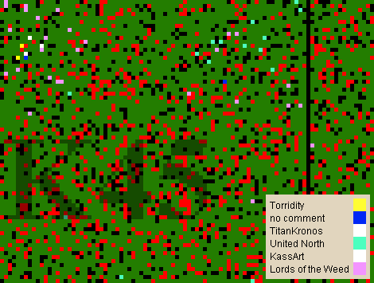

Erstellen von Fotos der Minimap |
|
 |
|
Dieses Werkzeug erlaubt es, einen Ausschnitt der Weltkarte bzw. die komplette Weltkarte als Bild auf der Festplatte abzuspeichern oder Online verfügbar zu machen. Hierfür muss zuerst mit dem entsprechenden Werkzeug ein Auswahlrechteck mit gedrückter linker Maustaste auf der Minimap aufgespannt werden. Anschließend öffnen sich zwei Dialoge, zum einen die Vorschau des gewählten Ausschnittes, zum andere die Einstellungen für das zu speichernde Bild. Hier kann man z.B. den Zoom verändern, um die Karte entsprechend zu vergrößern, was direkt auf die Vorschau angewendet wird. Weiterhin kann man die Transparenz wählen, mit der die Namen der markierten Spieler und Stämme im gespeicherten Bild in der unteren rechten Ecke gezeichnet werden. |
|
|  |